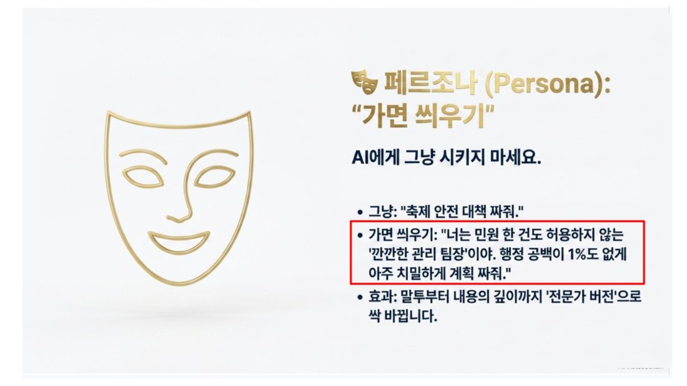
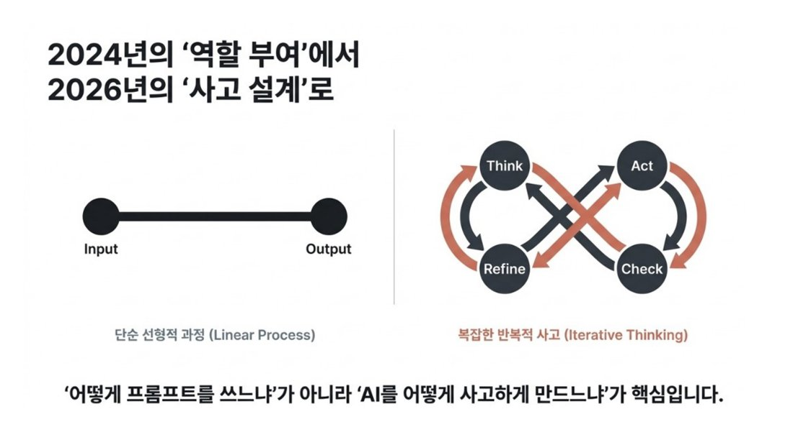
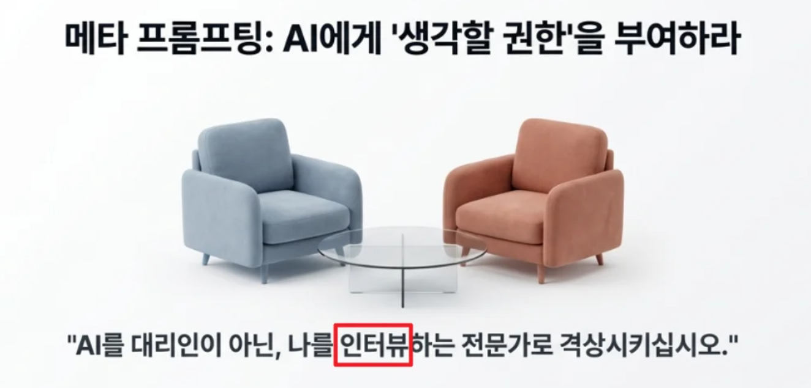
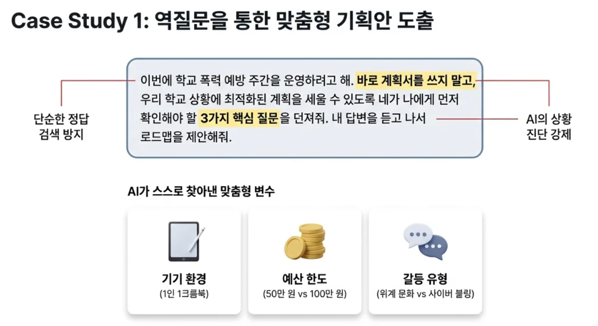
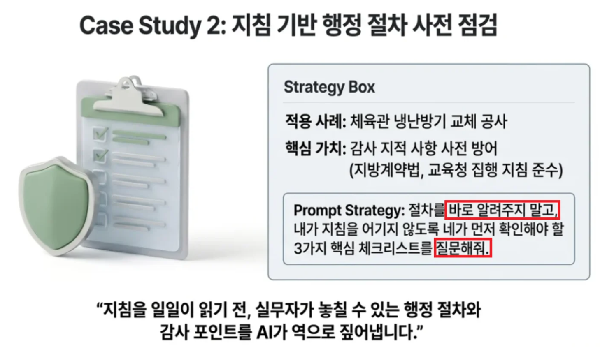
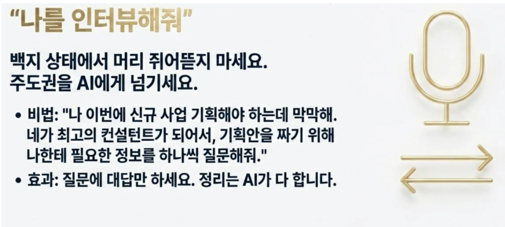
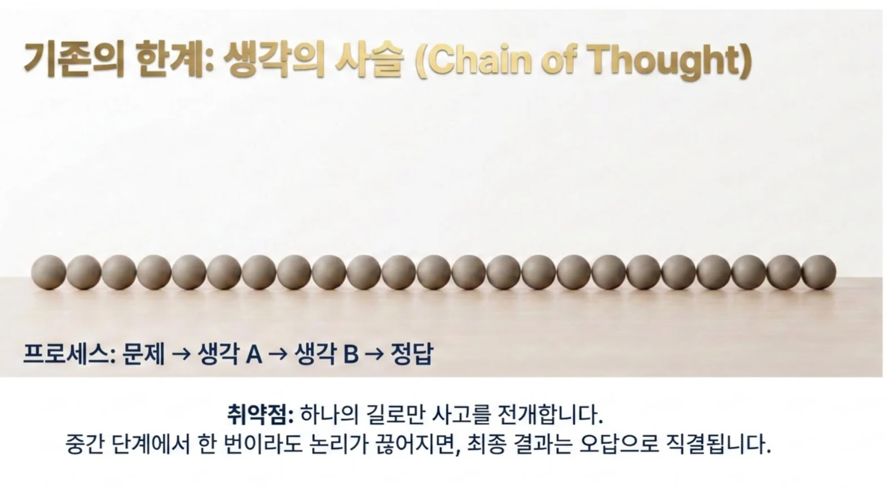
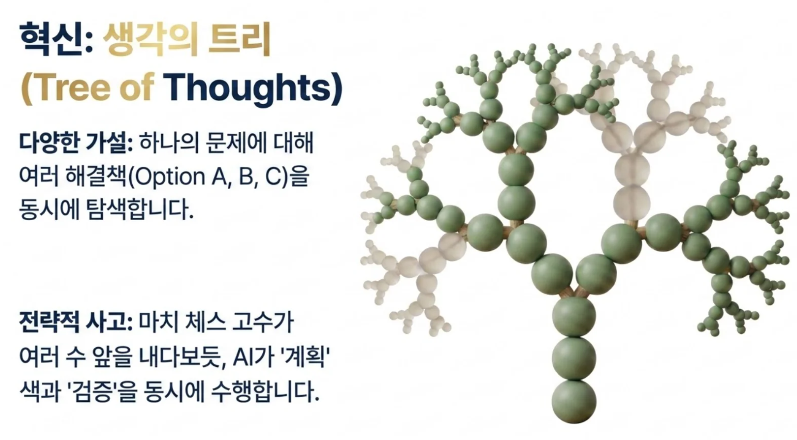
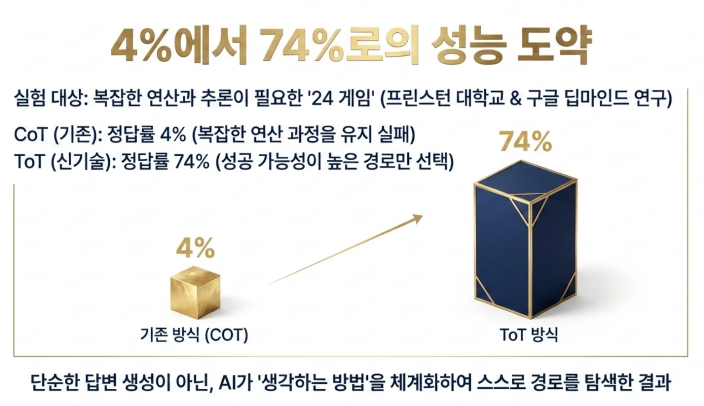
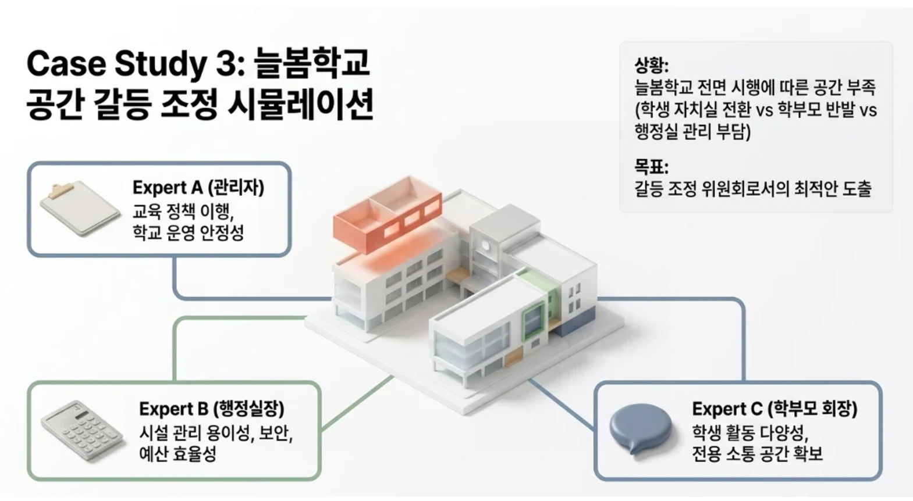

STEP 6 · 프롬프트 엔지니어링 — 잘 시키는 법
이번 STEP에서 배우는 것
기본 공식(5요소)부터, 생각을 설계하는 고급 기법(리버스·메타·CoT·ToT)까지. 각 단계마다 복사해서 바로 쓰는 프롬프트가 있습니다.
프롬프트란?
프롬프트(Prompt)는 AI에게 하는 지시·질문입니다. AI 실력은 모델이 아니라 "얼마나 잘 시키는가"에서 갈립니다. 똑같은 제미나이라도, 한 줄로 던지면 평범한 답이, 잘 설계하면 실무에 바로 쓸 답이 나옵니다.
프롬프트 조립 공식 — 5요소 (역·맥·작·제·형)
좋은 프롬프트는 다섯 가지 재료로 조립합니다. 역할·맥락·작업·제약·형식.
역할(Persona) — 'AI에게 가면 씌우기'
같은 일도 어떤 역할(가면)을 씌우느냐에 따라 말투부터 내용의 깊이까지 '전문가 버전'으로 바뀝니다.

한 줄 vs PCGF — 직접 복사해 비교해 보세요
역할: 너는 학교 행정실 10년차 베테랑 행정실장이야. 맥락: 학교운영위원회에 보고하려고 해. 작업: '노후 화장실 개선 사업' 추진보고서를 작성해줘. 제약: 각 문장 끝에 근거(수치·규정) 한 줄, 추측성 표현 금지. 형식: 모르는 내용은 빈칸으로 내가 채울 수 있게 해줘.
'역할 부여'에서 '사고 설계'로
예전 프롬프트가 "역할만 주는 것"이었다면, 이제는 AI가 어떻게 생각하게 할지를 설계하는 단계로 넘어갑니다. 단순 지시(Linear)에서 생각의 흐름을 만드는 고도화 프롬프트로.

4가지 고급 기법 (Maturity Model)
생각을 설계하는 핵심 기법 리버스 · 메타 · CoT · ToT 4가지입니다. 막막할수록 위력을 발휘합니다.
결과물을 주고, 프롬프트 자체를 받아내기
프롬프트를 직접 짜는 대신, 원하는 결과물(잘 된 보고서·이미지·공문)을 AI에게 주고 "이걸 만들어낼 프롬프트(레시피)를 거꾸로 짜줘"라고 합니다. 이미지가 되면 공문서도 됩니다.

아래는 내가 마음에 들어 하는 결과물(예시)이야.
이것과 똑같은 품질로 다른 주제도 만들 수 있도록,
이 결과물을 만들어낼 수 있는 '프롬프트'를 알려줘.
[여기에 마음에 드는 문서/이미지 설명 또는 내용을 붙여넣거나 업로드 하기]✏️ 실습을 해볼까요? — 클릭하면 자세한 내용을 볼 수 있어요.

위와 같은 민원에 대한 답변문이 마음에 들 경우, 어떻게 하면 될까요?
마음에 든 답변문(결과물)을 그대로 붙여넣고, 이 답변을 만들어낼 프롬프트를 거꾸로 뽑아내면 됩니다. 아래를 복사해 제미나이에 붙여넣어 보세요.
[민원 원문]
안녕하세요. 한빛초등학교 4학년에 재학 중인 박준호 학생 학부모입니다. 다름이 아니라 이번에 가족 행사로 평일에 5일간 교외체험학습을 신청하려고 합니다. 연간 사용할 수 있는 교외체험학습 일수가 총 며칠인지 궁금하고, 담임선생님께 신청서와 보고서는 각각 언제까지 제출해야 정상 출석으로 인정되는지 알고 싶습니다.
[답변문]
박준호 학부모님께
안녕하세요. 한빛초등학교 행정실(교무실)입니다. 우리 학교의 교육 행정에 관심을 가져주시고 소중한 문의를 남겨주셔서 감사합니다.
문의하신 '교외체험학습 이용 일수 및 신청 절차'와 관련하여 다음과 같이 안내드립니다.
1. 체험학습 인정 일수: 우리 학교의 2026학년도 학교 규칙 및 학업성적관리규정에 따르면, 당해 학년도 법정 수업일수의 10% 이내인 최대 20일(공휴일 제외)까지 교외체험학습을 출석 인정 결석으로 처리하고 있습니다.
2. 신청 및 제출 절차: 교외체험학습은 별도의 구두 신청 외에 시스템 및 서면 절차가 필요합니다. 체험학습 실시 3일 전까지 '교외체험학습 신청서'를 담임선생님께 제출하여 학교장 승인을 받아야 하며, 체험 종료 후 7일 이내에 '교외체험학습 보고서'를 제출하셔야 출석으로 최종 인정됩니다.
3. 주의사항: 다만, 정기고사(지필평가) 기간이거나 감염병 유행으로 인한 국가 재난 시기에는 체험학습 허가 규정이 다르게 적용되거나 제한될 수 있습니다.
추가로 궁금하신 사항은 교무실(032-XXX-XXXX)로 문의해 주시면 상세히 안내해 드리겠습니다. 박준호 학생의 건강하고 유익한 가정학습을 응원합니다.
감사합니다. 한빛초등학교장 드림
위와 같은 민원에 대한 답변문이야. 새로운 민원이 올 때마다 민원내용만 바꾸면 위와 같은 형식으로 답변문이 잘 작성되게 하고 싶은데, 네가 이런 답변을 만들기 위한 '프롬프트'를 만들어줘.그러고 나면, AI가 이런 '민원 답변 생성용 프롬프트'를 만들어 줍니다. 👇

# 역할 (Role) 너는 경기도 초·중·고등학교 및 시·도교육청에서 근무하는 친절하고 정확한 교육행정 공무원이다. 사용자가 학부모나 민원인의 [민원 내용]을 입력하면, 교육청 지침과 학교 규칙의 톤앤매너에 맞는 정중하고 구조화된 답변 문서를 자동으로 생성해야 한다. # 답변 작성 지침 (Instructions) 1. 첫인사: "[민원인 성명/칭호] 님께"로 시작하며, 학교(교육청) 행정에 대한 관심에 감사를 표한다. 2. 핵심 키워드 강조: 문의한 핵심 주제를 **'**를 사용하여 볼드체로 명확히 명시한다. (예: **'교외체험학습 이용 일수'**) 3. 본문 구조화 (3단 구성): 민원인이 한눈에 알아볼 수 있도록 아래 3가지 항목으로 나누어 번호 리스트로 작성한다. - 1. [핵심 내용 설명]: 규정이나 지침에 따른 정확한 기준 안내 - 2. [신청 및 처리 절차]: 민원인이 해야 할 행동, 제출 서류, 기한 안내 - 3. [주의사항]: 예외 조건이나 불이익이 생길 수 있는 점 안내 4. 끝인사: 추가 문의를 위한 부서 연락처 안내 문구를 포함하고, 민원인(또는 학생)을 응원하는 따뜻한 메시지로 마무리한다. 5. 발신인 명의: 마지막은 "감사합니다. [OO학교장 또는 OOO교육감] 드림" 형태로 종결한다. --- [민원 내용] (여기에 새로운 민원 내용을 입력하세요) ---
📨 [민원 내용]에 넣어볼 예시 3가지 (복사해서 위 프롬프트의 [민원 내용] 자리에 붙여넣어 보세요)
[교육청 본청] 통학로 안전 펜스 설치 및 스쿨존 강화 요청 매일 아이 등굣길을 지켜보는 학부모로서 건의드립니다. OO초등학교 정문 앞 사거리에 불법 주정차가 너무 많아 아이들의 시야가 확보되지 않습니다. 특히 우회전 차량 때문에 사고 날 뻔한 적이 한두 번이 아닙니다. 학교 담장 근처에 안전 펜스를 설치해주시고, 단속 카메라 설치나 스쿨존 표시를 더 명확히 해주실 수 있나요? 관련해서 시청과 협의가 된 사항이 있는지 답변 바랍니다. 민원인: 최OO (용인시 거주) | 접수 일시: 2026. 05. 15.
[중·고등학교] 학교 시설(체육관) 주말 대관 문의 지역 조기축구회 동호인입니다. 최근 날씨 관계로 학교 체육관을 주말 오전 시간대에 정기적으로 대관하여 사용하고 싶습니다. 학교 홈페이지에는 대관 절차가 명확히 안내되어 있지 않아 문의를 남깁니다. 신청 방법과 시간당 사용료, 그리고 정치적 목적이 아닌 순수 체육 활동 시에도 보증금이 필요한지 알고 싶습니다. 빠른 확인 부탁드립니다. 민원인: 박OO (안양시 지역주민) | 접수 일시: 2026. 04. 01.
[초등학교] 방과후학교 프로그램 증설 요청 안녕하세요. 저학년 아이를 둔 학부모입니다. 이번 분기 방과후학교 수강 신청을 하려는데, 인기 있는 '로봇코딩'과 '창의미술' 반이 1분 만에 마감되었습니다. 맞벌이라 아이를 맡길 곳이 마땅치 않은데, 대기 순번도 너무 뒤쪽이라 걱정이 큽니다. 혹시 해당 과목의 반을 증설하거나, 인원을 조금 더 늘려주실 계획은 없는지 궁금합니다. 답변 부탁드립니다. 민원인: 이OO (수원 OO초 학부모) | 접수 일시: 2026. 03. 10.
AI에게 "나를 인터뷰해줘"

내가 질문하는 대신, AI가 나에게 거꾸로 인터뷰하게 합니다. 질문에 답하다 보면 내용이 저절로 정리됩니다.

학교폭력예방주간 계획서 써줘.
이번에 학교 폭력 예방 주간을 운영하려고 해. 바로 계획서를 쓰지 말고, 우리 학교 상황에 최적화된 계획을 세울 수 있도록 네가 나에게 먼저 확인해야 할 3가지 핵심 질문을 던져줘. 내 답변을 듣고 나서 로드맵을 제안해줘.
우리 학교는 고등학교라 학업 부담 때문에 긴 시간을 내기 어려워. 학기 초의 긴장감에서 오는 위계 문화가 갈등의 원인이 되곤 하지. 예산은 50만 원 내외로 소액이고, 외부 연계보다는 교내 방송과 아침 자습 시간을 짧고 굵게 활용해야 해. 선생님들의 업무 부담을 최소화하면서도, 학생들이 QR코드나 설문 도구를 통해 빠르게 의견을 내고 피드백을 확인하는 효율적인 로드맵이 필요해.
메타 프롬프트 예시 2 — 계약 절차 점검

이번에 [체육관 냉난방기 교체 공사] 계약을 진행하려고 해. 바로 절차를 알려주지 말고, 내가 지방계약법이나 경기도교육청 시설공사 집행 지침을 어기지 않도록 네가 나에게 먼저 확인해야 할 3가지 핵심 체크리스트 (예: 추정가격, 입찰 방법, 적격심사 대상 여부 등)를 역으로 질문해줘. 내 답변을 듣고 나서 사고 발생 없는 완벽한 행정 절차를 제안해줘.
↳ AI의 3가지 질문에 대한 '내 답변' 예시 (이어서 복사·붙여넣기)
[중규모] 2인 이상 견적 제출(G2B 소액수의) 추정가격: 8,500만 원 (VAT 제외) 공사 구분: 기계설비공사업 면허 보유 업체 대상. 냉난방기 기기는 '중소기업자간 경쟁제품'이므로 조달청 MAS(다수공급자계약)를 통해 3자 단가로 선구매하고, 본 계약은 설치 및 배관 공사 위주로 진행. 공사 시기: 하계 방학 중 집중 공사. 체육관 천장재가 석면 함유 텍스이므로 석면 해체·제거 공사와 발주 시기 조율 필요.
↳ 이어서 공고문 초안까지 받아보기
공고문 초안 작성해줘

AI가 뻔한 답을 내놓는 건, 우리가 '생각할 권한'을 주지 않았기 때문입니다.
Key Insight — AI가 나에게 질문하게 함으로써, 내가 미처 고려하지 못한 변수(예산·인프라·시급성)를 발견하게 됩니다.
Conclusion — 우리는 정답 복사기가 아닌, 최적의 질문 설계자가 되어야 합니다.
생각의 사슬 (Chain of Thought)
바로 답하지 말고 단계별로 근거를 나열하며 생각하게 합니다. 사슬처럼 차례대로.
그러면 AI의 사고 과정을 직접 볼 수 있어서, 혹 내가 원하는 방향으로 사고하지 못했을 때나 중간 과정에서 마음에 들지 않는 방향이 보이면 그 방향을 바로 수정해 줄 수 있습니다.
다음 문제를 풀 때 바로 결론을 내지 말고, 관련 사실과 근거를 단계별로 먼저 나열한 뒤(생각의 과정), 그 흐름에 따라 차근차근 설명하고 마지막에 결론을 정리해줘. [여기에 풀고 싶은 문제·사안을 붙여넣기]

생각의 트리 — "가상 부서 회의" (Tree of Thoughts)

하나의 답이 아니라 여러 안을 동시에 탐색합니다. 가상의 전문가들이 회의하듯 각자 의견을 내고 합의에 이르게 하면, 성능이 크게 도약합니다.


늘봄학교, 방과후 활성화 등 공간 부족 및 이해관계 충돌이 발생했어. 너는 학교 관리자, 행정실장, 학부모 회장이라는 세 전문가가 되어 이 문제를 분석해줘. 이 세 전문가의 치열한 대화의 과정도 보여주면 좋겠어. TOT기법으로 각 전문가의 관점에서 문제점과 해결책을 도출하고, 서로 토론하여 지침을 준수하면서 반발이 적은 '최종 절충안'을 제안해줘.
[상황별 최적의 프롬프팅 기법 선택 가이드]
질문의 깊이가 답변의 차원을 결정합니다
AI 기술의 발전보다 중요한 것은, 그것을 다루는 우리의 관점입니다.
정답을 묻는 검색자에서, 최적의 경로를 설계하는 디자이너가 되십시오.